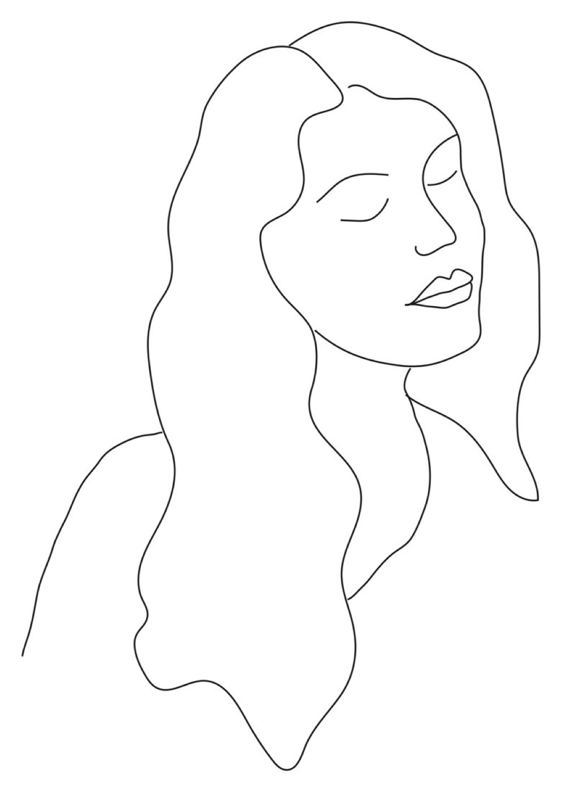

Gardens made to be felt, not only seen.
I design sensory gardens for children and adults: calm, considered spaces planted for scent, texture, sound and seasonal change, and made to slow you down.
Start a garden conversation
Strip a space back to its essentials, then give it something to discover.
Trained in landscape architecture, I'm interested in how our surroundings shape the way we feel. The gardens I design are quiet and uncluttered, with intricate detail where it matters: the brush of a grass against your hand, water moving over stone, a path that invites a child to explore.
Every garden starts with the people who'll use it and the site as it really is: its light, soil, views and the way you move through it. From there I take the design from first sketch through planting plans, budgets and suppliers to installation and handover.
Designed for every sense
Sensory gardensTouch
Soft grasses, smooth stones, bark and moss underfoot. Textures to run your hands through.
Scent
Aromatic herbs and fynbos set along paths, so brushing past releases scent.
Sound
Moving water, rustling grasses, and birds and insects drawn in by the planting.
Sight
A restrained palette that shifts with the seasons, with light and shadow as part of the design.
Taste
Edible borders, herbs and fruit for picking, so children can grow, harvest and taste.
Places to explore, and places to be calm
Gardens that hold a child's attention through discovery rather than equipment. Drawn from my work creating calm corners and decluttered spaces for children and families.
- Stepping-stone trails and hidden paths
- Water, sand and loose natural materials
- Quiet nooks for retreat and regulation
- Planting for bugs, birds and little gardeners
Restorative spaces that slow the day down
Outdoor rooms for unwinding and gathering, shaped around how you actually want to spend time outside.
- Courtyards, decks and plunge-pool gardens
- Fire, water and seating as anchors
- Low-maintenance, waterwise planting
- Garden rooms for reflection and rest
Selected work
Sketch to spaceServices
Design · Plan · InstallGarden consultation
A site visit to understand the space, how you use it and what you'd like it to become.
Concept design
Hand-drawn sketches and concept vignettes that set the mood, layout and sensory journey.
Planting plans and technical detail
Measured plans, planting schedules, working drawings and construction details.
Budgets and procurement
Bills of quantities, sourcing plants and materials, and keeping suppliers to the programme.
Installation and site supervision
Overseeing the build on site, solving problems as they come up, and handing over a finished garden.
Interior plant styling
Plant palettes and styling for homes, studios and retail spaces, bringing the garden inside.
How a garden comes together
Process- Site visitLight, soil, views, and how you move through the space.
- ConceptSketches and vignettes to agree the feel before the detail.
- PlansMeasured drawings, planting plan and technical detail.
- BudgetBills of quantities and a clear, honest costing.
- InstallProcurement, supplier coordination and site supervision.
- HandoverA walk-through of the garden and how to care for it as it grows.
About Pauli
Studio
I'm a landscape designer based in Cape Town. I trained in landscape architecture at the University of Pretoria and later in interior design, and I've worked as a landscape technologist on planting plans, renders, bills of quantities and installations, and as an in-house plant stylist.
I'm drawn to the quiet relationship between our surroundings and our wellbeing: a garden that settles a busy mind, or gives a child somewhere to wonder. Outside of work you'll find me hiking, travelling, or collecting interesting stones and shells.
- BSc Landscape Architecture · University of Pretoria2012 – 2014
- Landscape technologist · The Friendly Plant, New Town Landscape Architects, Outerspace2015 – 2016
- Diploma in Interior Design · Interior Design Institute of South Africa2017
- Plant stylist and consultant · Folha2018 – 2020
Have a garden in mind?
Whether it's a small courtyard, a family garden or a space for a school or practice, I'd love to hear about it.
- Email pauliwhite@icloud.com
- Phone +27 82 339 8852
- Based Cape Town, Western Cape